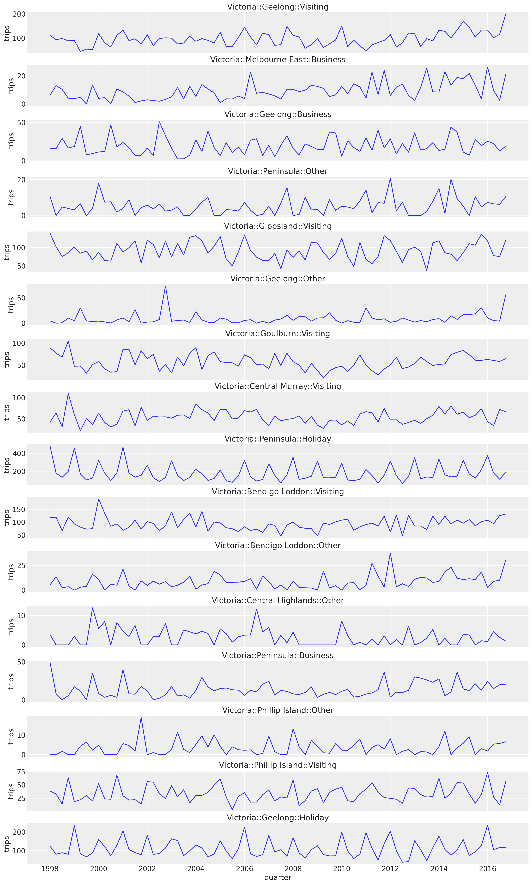
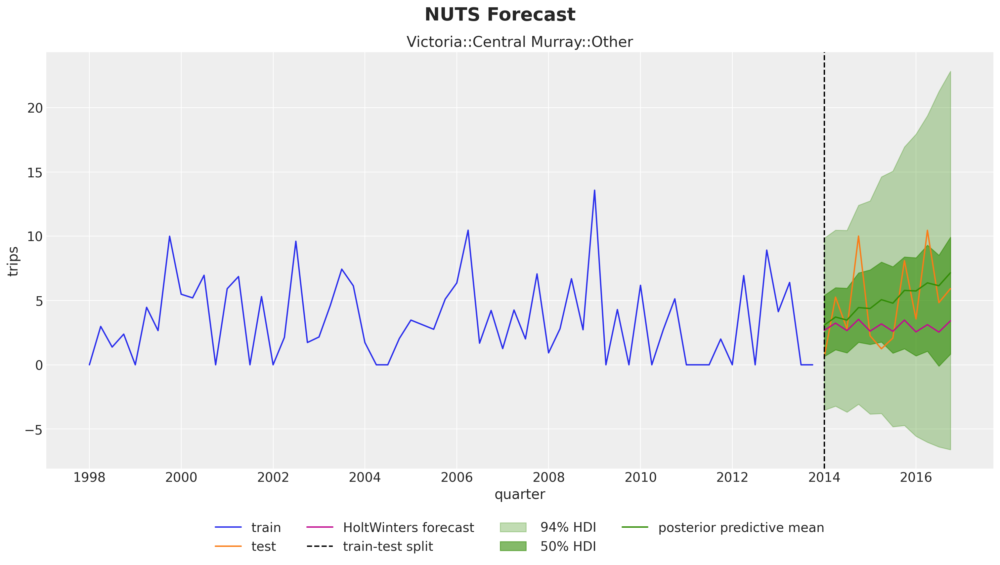
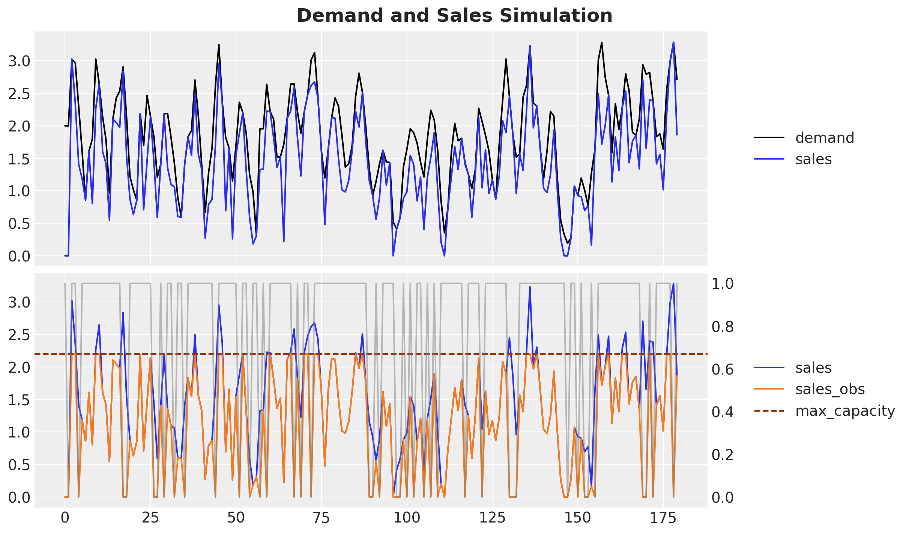
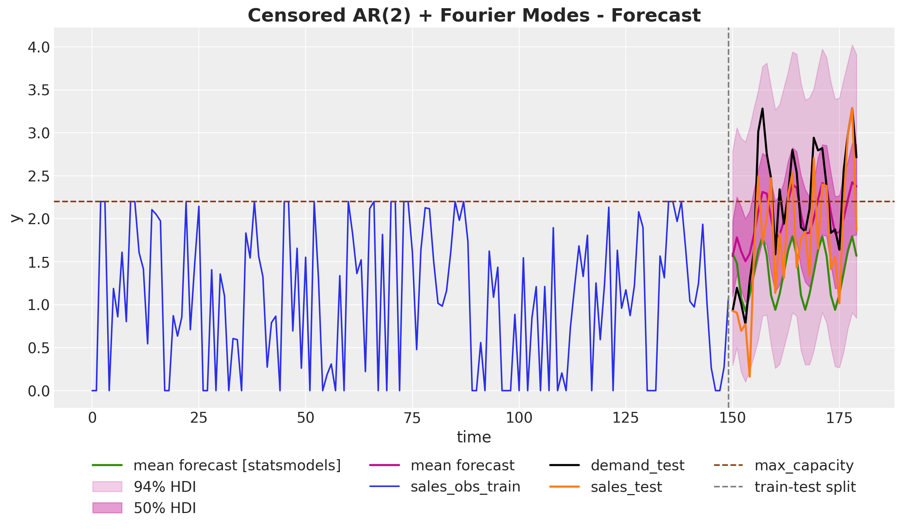
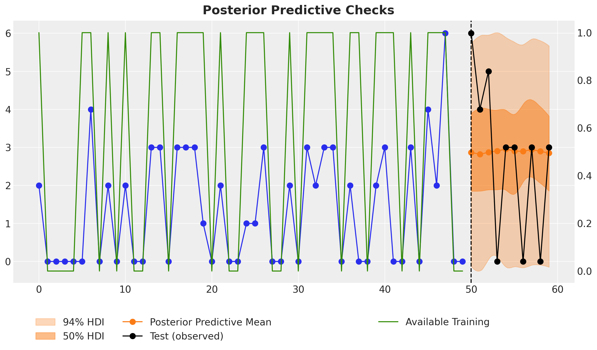
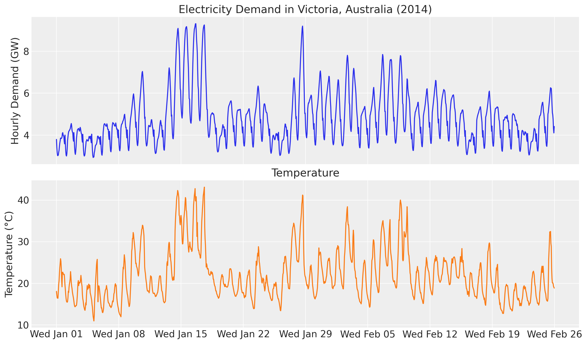
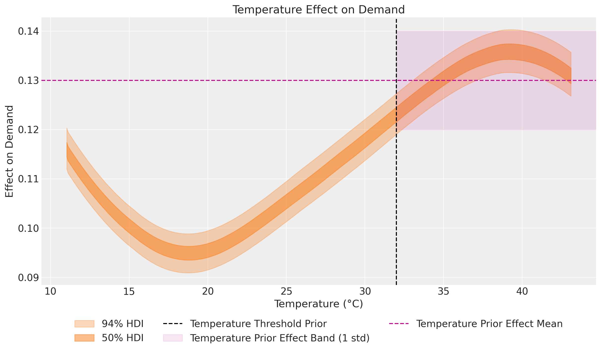
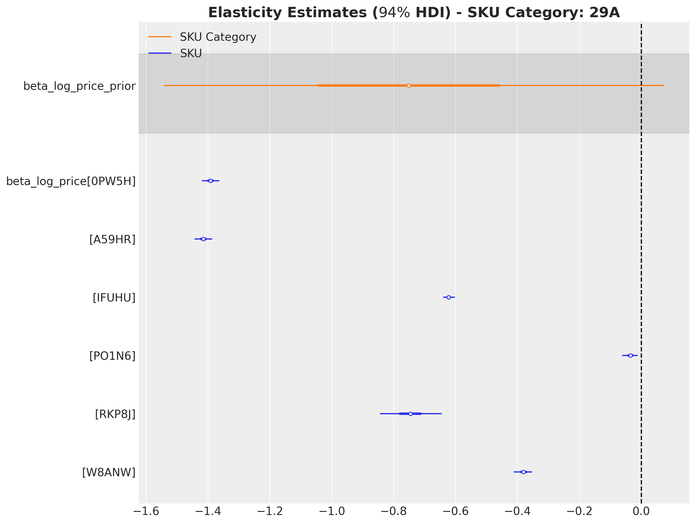
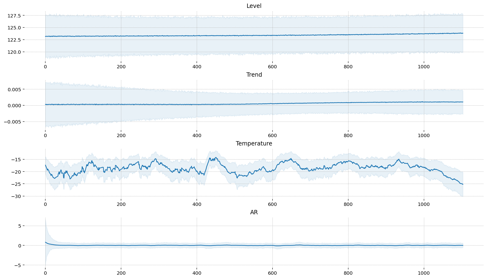

Probabilistic Time Series Analysis: Opportunities and Applications

Over the past few years, we've witnessed the profound impact of Bayesian modeling on businesses' decisions. In this post, we aim to delve into a specific area where Bayesian methods have demonstrated their transformative potential: probabilistic forecasting models.
Forecasting is a critical component of business planning across industries—from retail inventory management to financial market analysis, from energy demand prediction to marketing budget allocation. Traditionally, businesses have relied on point forecasts that provide a single estimate of future values. While these approaches can work reasonably well under stable conditions, they often fail to capture the inherent uncertainty in real-world systems and can lead to suboptimal decisions when confronted with volatile or complex environments.
Probabilistic forecasting addresses these limitations by generating complete probability distributions over possible future outcomes rather than single-point predictions. This paradigm shift provides decision-makers with a more comprehensive view of potential scenarios, enabling robust planning that accounts for risk and uncertainty. With recent advances in computational methods and Bayesian statistics, these sophisticated approaches have become increasingly accessible to practitioners.
In this post, we'll explore how probabilistic forecasting models can provide a competitive advantage through their ability to incorporate domain expertise, handle data limitations, and model complex relationships. We'll demonstrate these capabilities through several case studies that showcase practical applications across different business contexts.
Classical Time Series Forecasting Models
In many business domains, such as logistics, retail, and marketing, we are interested in predicting the future values of one or more time series. Typical examples are KPIs like sales, conversions, orders, and retention. When businesses encounter forecasting challenges, they typically have two main approaches to consider:
Use statistical methods to infer the trend, seasonality, and remainder components. Once we understand these components, we can use them to predict the future. Classical examples that have been widely applied are exponential smoothing and autoregressive models. These models are great baselines and relatively easy to fit. Use external regressors and lagged copies of the time series to fit a machine-learning model, such as linear regression or a gradient-boosted tree model.
Depending on the data and concrete applications, either of these methods can perform very well. In fact, with modern
open-source packages like the ones developed by Nixtla, it is straightforward to test and
experiment with these models (see statsforecast for statistical models
and mlforecast for machine learning forecasting models)).
Of course, forecasting is a well-studied domain (see, for example, Forecasting: Principles and Practice for an introduction), and there are many more approaches and combinations of these methods. For instance, the article M4 Forecasting Competition: Introducing a New Hybrid ES-RNN Model describes a hybrid method between exponential smoothing and recurrent neural networks that outperformed many classical time series models in the M4 competition. Trying to summarize all the models and possibilities in a blog post is nearly impossible. Instead, we want to describe some concrete cases where Bayesian forecasting models can be a competitive advantage for business applications.
Probabilistic Forecasting Models
Generally speaking, when discussing probabilistic forecasting models, we often refer to a forecasting model learning parameters of a distribution instead of just the point forecast. For example, we can predict the mean and the standard deviation when using a normal likelihood. This strategy provides great flexibility, as we can better control the uncertainty and model the mean and variance jointly. A well-known example of these models is the DeepAR: Probabilistic Forecasting with Autoregressive Recurrent Networks developed by Amazon Research.
In addition, we can go fully Bayesian by setting priors on the model parameters. The blog post Notes on Exponential Smoothing with NumPyro provides an explicit description of how to implement an exponential smoothing model as a fully Bayesian probabilistic forecasting model.
Okay, and so what? What benefits can we get from these types of models? We are glad you asked 😉! Next, we present various case studies where probabilistic forecasting models can significantly improve performance.
Hierarchical Models
One typical scenario where Bayesian models shine is when we have a hierarchical structure (e.g., category levels, region groupings). In this case, sharing information across related groups can improve model performance by regularizing parameter estimation (the shrinkage effect). For a detailed description of this approach, please see the complete write-up Hierarchical Modeling by Michael Betancourt. In the context of time series forecasting, we can better estimate trend and seasonality components by leveraging the information-sharing nature of hierarchical models.
Let's look at a concrete example to illustrate this point. Consider the quarterly tourism In Australia dataset, where we have tourism volumes between 1998 and 2016 per state, region, and purpose. For illustration, let us consider forecasting these tourism volumes for each state, region, and purpose combination (308 time series). We can take a look at a sample from the state of "Victoria" in the following plot:

While subtle, we see a positive trend component in most of these sample series.
A natural approach would be to consider each series independently and use a time series model, such as exponential smoothing. This approach is a great baseline, but we can do better! In this example, there is a shared trend component across regions, which might not be evident in the historical data of some smaller areas. Using hierarchical exponential smoothing, we can improve the model performance, particularly for these smaller areas, as illustrated in the following plot:

We clearly see that in the test period, a mild trend component is inferred from the hierarchical structure (orange and green lines), which would likely not have been captured by a purely univariate time series model (pink line).
The effort to adapt an exponential smoothing model to a hierarchical version is not as complicated as it might sound. Here you can find all the code and details to reproduce this result (and potentially adapt it for your application 😉).
Remark [Forecasting Baselines]: In this simple case, the hierarchical model performs slightly better than independent
AutoETS models fitted to each individual series.
This result reflects the general situation where strong baseline models are often hard to beat. So please establish baseline
models and robust evaluation processes before implementing more complex models 💡!
Censored Likelihoods
In demand forecasting, we often face the challenge of censored data, where observations are only partially known. Censoring occurs when values above (or below) a certain threshold are unobserved or replaced with the threshold value itself. This is particularly relevant in retail, where sales data only captures observed demand when products are in stock. The true, unconstrained demand remains unobserved during stockouts or when inventory capacity limits are reached.
The simulation study Demand Forecasting with Censored Likelihood demonstrates how Bayesian models with censored likelihoods can provide more accurate demand forecasts compared to traditional time series methods such as ARIMA. By simulating true demand as an AR(2) process with seasonal components and then generating censored sales data reflecting stockouts and capacity constraints, the study shows how traditional forecasting methods systematically underestimate future demand because they treat the observed sales as the complete signal.
Let's examine the simulated data:

- The top plot shows the true underlying demand (black) and the sales that would have occurred without availability constraints (blue).
- The bottom plot shows the expected sales without constraints (blue) versus the observed sales (orange) when availability constraints impose a maximum sales value (note: this upper bound often varies over time).
Ultimately, we want to forecast the unconstrained demand (black curve) while only observing the constrained sales (orange curve). The following plot compares the forecasts from a simple AR(2) seasonal model versus the censored likelihood model:

The results highlight a significant advantage of censored likelihood models: they accurately model the underlying demand distribution even during periods with stockouts or capacity constraints, effectively "reconstructing" what the true demand would have been. This is clearly visible as the predictions (pink) from the censored model are much closer to the true demand target (black) than those from the simple AR(2) model (green).
This modeling approach leads to forecasts that better capture both the true magnitude and the uncertainty of future demand. It provides critical information for inventory planning, capacity decisions, and revenue optimization that would be missed by conventional forecasting techniques ignoring the censoring mechanism.
Availability-Constrained TSB Models for Intermittent Series
In retail, intermittent time series are the norm rather than the exception. While top-selling products might show regular daily sales patterns, the vast majority of items in a typical retail catalog exhibit sporadic demand - with many days showing zero sales followed by occasional purchases. This pattern is particularly common for niche products, seasonal items, or products with long replacement cycles. Traditional forecasting methods, often designed for continuous demand streams, struggle with these patterns.
For products with sporadic demand patterns (intermittent time series), the Teunter-Syntetos-Babai (TSB) model is a popular forecasting approach. However, standard TSB models cannot distinguish between true zero demand (no customer interest) and zeros caused by product unavailability (out of stock). The case study Hacking the TSB Model for Intermediate Time Series to Accommodate for Availability Constraints demonstrates how to extend the TSB model to account for availability constraints in intermittent demand forecasting.
The study, motivated by Ivan Svetunkov's "Why zeroes happen" blog post, simulates intermittent time series using a Poisson process combined with a binary availability mask. By incorporating this availability information directly into the model, it prevents the estimated probability of non-zero demand from dropping excessively when zeros are observed due to unavailability rather than a lack of demand. The modified TSB model better preserves the true demand signal when forecasting, as it can distinguish between zero sales caused by unavailability versus actual zero demand. Let's look at a specific time series prediction:

Despite the fact that the last two data points of the training data are zeros, the model does not simply predict zeros for the next time steps, which is a common behavior for standard intermittent time series models. The reason is that the model is aware that these last two zeros are due to the lack of availability and not actual zero demand. Hence, when we set the availability to one for the future forecast period, the forecast is appropriately non-zero. This is exactly what we want 🙌!
This approach demonstrates the flexibility of probabilistic models to incorporate business constraints directly into the forecasting process. The results show significant improvement in forecast accuracy, particularly for products with limited availability histories, providing more reliable demand estimates for inventory planning and allocation. The study also highlights how these models can be efficiently implemented and scaled to handle thousands of time series simultaneously, making them practical for real-world business applications.
Calibration and Custom Likelihoods
Probabilistic forecasting models can be further enhanced through parameter calibration using domain knowledge or experimental data. The case study Electricity Demand Forecast with Prior Calibration demonstrates how to incorporate external information to improve a dynamic time-series model for electricity demand forecasting. The core idea is to model electricity demand as a function of temperature:

When examining the ratio of electricity demand to temperature, we observe that this ratio is not constant but depends on the temperature itself. Hence, we can use a Gaussian process to model this relationship. The specific model uses a Hilbert Space Gaussian Process (HSGP) to capture the potentially complex, time-varying relationship between temperature and electricity demand.
A key innovation here is the use of a prior calibration process to constrain the estimated temperature effect on demand, particularly for extreme temperatures where historical data might be limited. By incorporating domain expertise on how electricity demand responds to very high temperatures (e.g., above 32°C due to air conditioning load), the model produces more reliable forecasts in these edge cases. The calibration works by adding custom likelihoods that effectively "inform" the model about expected parameter values in certain regimes. In this concrete example, we use a Gaussian process to model the temperature-electricity relationship while imposing a constraint on this ratio for high temperatures:

This estimated effect plot aligns with the observations made in the exploratory data analysis section of Forecasting: Principles and Practice (2nd ed.) by Hyndman and Athanasopoulos:
It is clear that high demand occurs when temperatures are high due to the effect of air-conditioning. But there is also a heating effect, where demand increases for very low temperatures.
Indeed, our model captures this: at the extremes of the common temperature range, the temperature effect on demand increases. Heating and cooling demand typically increases outside the approximate range of 15°C - 25°C.
This calibration approach mirrors the methodology used in PyMC Marketing's Media Mix Model with Lift Test Calibration, where experimental results (lift tests) are used to calibrate marketing effectiveness parameters. In both cases, we enhance the forecasting model by incorporating additional likelihood terms that reflect external knowledge—whether that's experimental lift test results, known physical constraints, or other domain expertise. This calibration technique is especially valuable when historical data doesn't fully represent all possible future scenarios or when we suspect the presence of unobserved confounders (see Unobserved Confounders, ROAS and Lift Tests in Media Mix Models).
It is important to emphasize that these ideas are not new. The simulation example above is inspired by a similar technique from the Pyro tutorial Train a DLM with coefficients priors at various time points. Similarly, extensions of this approach exist for larger time-series architectures like Causal DeepAR developed by Zalando Research.
Remark [Scaling Probabilistic Forecasting Models]: Depending on the size of your dataset, you might consider running full Markov Chain Monte Carlo (MCMC) or opting for faster approximate inference methods like Stochastic Variational Inference (SVI), as described in NumPyro's tutorial Hierarchical Forecasting.
Hierarchical Price Elasticity Models
Probabilistic modeling isn't limited to time series applications; it can also provide powerful solutions for price sensitivity analysis. The case study Hierarchical Pricing Elasticity Models demonstrates how Bayesian hierarchical models can significantly improve price elasticity estimates in retail settings, especially where data may be sparse at the individual product level.
Using a retail dataset with over 5,000 SKUs across nearly 200 categories, the study compares three approaches to modeling the constant elasticity demand function $\log(\text{quantity}) = \log(A) + \beta\log(\text{price})$:
- A simple model where each SKU has independent elasticity estimates.
- A fixed-effects model accounting for date effects.
- A hierarchical model that incorporates the product category structure.
The hierarchical approach shows distinct advantages by leveraging the multilevel structure inherent in retail data. When individual SKUs have limited price variation or sparse sales data, the hierarchical model "borrows strength" from similar products within the same category, producing more stable and economically sensible elasticity estimates.

A key insight from this study is how the hierarchical model regularizes extreme elasticity values often caused by data sparsity or outliers. Where simple, independent models might estimate implausible positive price elasticities for some products due to noise, the hierarchical structure pulls these estimates toward more reasonable category-level means through partial pooling. This shrinkage effect is especially valuable for retailers with large product catalogs where many items inevitably have limited historical price and sales data.
The approach also enables elasticity estimation at different levels of the product hierarchy (e.g., individual SKU, category, department), allowing analysts to understand price sensitivity at multiple relevant decision-making levels. The implementation using stochastic variational inference in NumPyro demonstrates that these sophisticated models can scale efficiently to large retail datasets with thousands of products, making them practical for real-world pricing applications.
State Space Models in PyMC
For time series forecasting, state space models (SSMs) provide a powerful and flexible framework capable of handling complex dynamics, including time-varying trends, multiple seasonality patterns, and the influence of external regressors. The PyMC ecosystem recently expanded with the introduction of PyMC-Extras, which includes a specialized module for structural time series modeling based on state space representations (primarily developed by Jesse Grabowski).
The Structural Time Series Modeling notebook demonstrates how to leverage these components to build sophisticated forecasting models within PyMC. The module provides building blocks that can be combined to create custom models tailored to specific needs, including:
- Local Linear Trend: Captures time-varying level and slope components.
- Seasonal components: Models periodic patterns with flexible frequencies (e.g., daily, weekly, yearly).
- Regression components: Incorporates the static effects of covariates.
- Dynamic regression coefficients: Allows for time-varying relationships between predictors and the target variable.
- Cycle components: Models quasi-cyclical behaviors with stochastic periodicity and damping factors.
What makes this implementation particularly powerful is its composability – you can easily mix and match these components to construct models that reflect the specific characteristics and expected dynamics of your data.
The implementation relies on an efficient Kalman filter algorithm for state estimation and likelihood calculation. This allows for seamless handling of missing data, robust anomaly detection, and integrated forecasting all within a unified Bayesian framework. This approach also facilitates the incorporation of domain knowledge through informative priors on the variance parameters, which control the flexibility and rate of change for each model component over time.
A key advantage of the state space approach is its interpretability. It decomposes the time series into distinct, understandable components, making it easier to communicate insights to stakeholders. For example, you can extract and visualize the estimated trend, seasonal effects, and regression impacts separately, providing clear explanations of the factors driving your forecasts.

For practitioners looking to move beyond traditional or "black-box" forecasting methods, PyMC-Extras' state space module offers a fully Bayesian approach that explicitly models uncertainty while maintaining high interpretability. This is especially valuable in business contexts where understanding the why behind predictions is often as important as the predictions themselves.
If you want to learn more about this module, check out our webinar:
Summary
In this blog post, we've explored several ways probabilistic forecasting models can provide significant advantages for business applications compared to traditional time series methods. We've seen how hierarchical models can leverage shared information across related time series to improve forecasts, especially when dealing with sparse data. Censored likelihoods help overcome limitations imposed by historical data, enabling us to model the true underlying demand even when observations are truncated by stockouts or capacity constraints. For intermittent demand patterns, availability-constrained TSB models distinguish between true zero demand and stockout-induced zeros, leading to more accurate forecasts for sporadically selling products.
We've also demonstrated how domain knowledge can be incorporated through model calibration using custom likelihoods. This technique proves particularly valuable when historical data contains unobserved confounders or doesn't fully capture all relevant dynamics, allowing us to understand not only the forecast but also the drivers behind it. Finally, we've highlighted the powerful state space modeling capabilities now available in PyMC-Extras, which provide flexible, interpretable components for building sophisticated Bayesian time series forecasting models.
Across all these applications, the common thread is clear: probabilistic forecasting doesn't just quantify uncertainty more effectively—it enables us to directly incorporate business constraints, domain knowledge, and potentially causal relationships into our models. This leads to forecasts that are not only potentially more accurate but also more actionable and interpretable for decision- makers. As computational tools and methods continue to evolve, these sophisticated approaches are becoming increasingly accessible to practitioners, making probabilistic forecasting a valuable addition to any modern data scientist's toolkit.
Additionally, we've shown how these probabilistic approaches extend beyond traditional time series forecasting into areas like price elasticity modeling. Here, hierarchical Bayesian methods can regularize elasticity estimates for large product catalogs by leveraging the natural hierarchy in retail data. This ability to produce reliable estimates at different levels of aggregation (from individual SKUs to product categories) while effectively handling data sparsity demonstrates the versatility of probabilistic modeling for critical business decision-making beyond pure forecasting tasks.
Work with PyMC Labs
If you are interested in seeing what we at PyMC Labs can do for you, then please email info@pymc-labs.com. We work with companies at a variety of scales and with varying levels of existing modeling capacity. We also run corporate workshop training events and can provide sessions ranging from introduction to Bayes to more advanced topics.